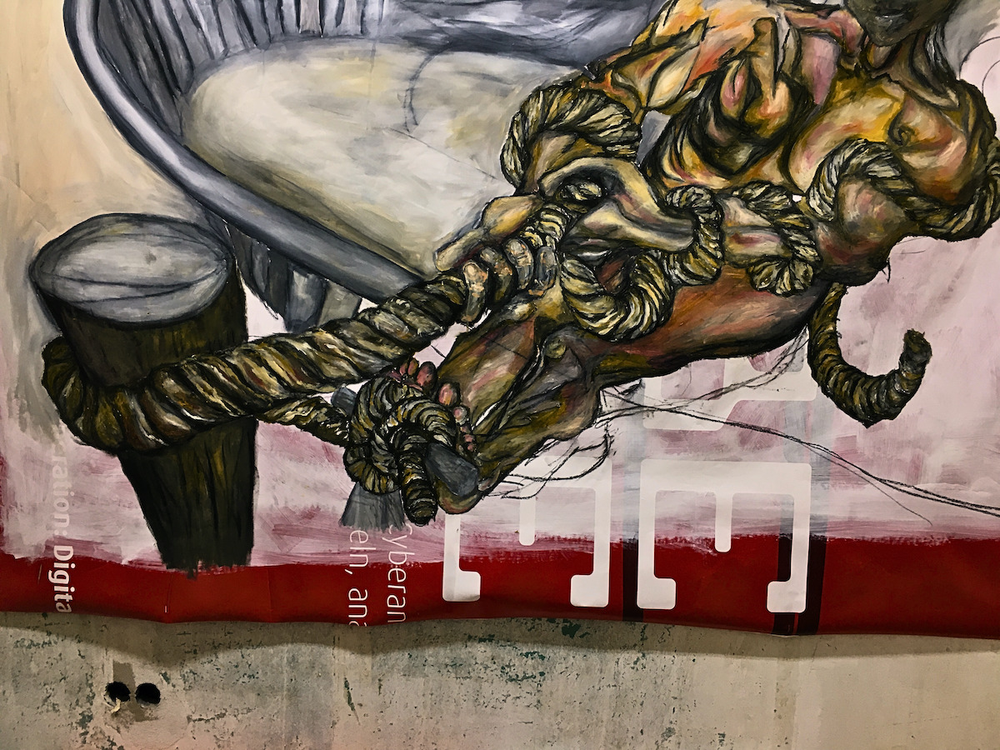

These sketches were the result of a studio practice developed over the summer of 2024, focusing on a technique of combining charcoal from initial drawings with oil paint on unstretched canvas. Each work is approximately 2 meters wide. The sketches were exhibited at the Culturim Open Studios in Lichtenberg in September, 2024
